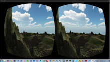
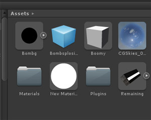
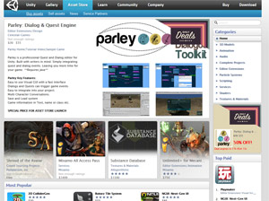
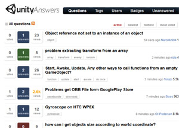
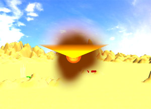
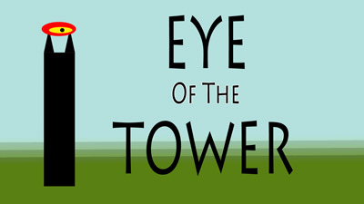
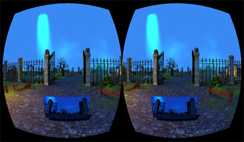
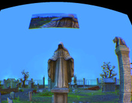

More than 15 years ago now, I was playing a game called “Quake”. Actually, I was playing a hell of a lot of it.
So much so that I started a news site about the burgeoning e-sport that ended up being the best-known one in the UK.
(Essentially, I was running an e-sports blog about five years before either the word “blog” or the phrase “e-sports” became a thing.)
I was also working toward becoming a novelist, because it seemed like the most accessible storytelling path for me. I’d thought about trying to make films, but the type of films I’d want to make were obviously far too big and expensive to even consider.
As a result, some of my Quake-playing buddies knew I wrote stories. And when some of them started messing around with the Quake game engine, making what were known at the time as “Quake Movies” in it, they asked me to come along and write them a story for what was to be the “UK Quake Movie”.
I, er, rather took over that project, and it ended up becoming the first part of a series called “Eschaton”. Set in the horror universe of H.P. Lovecraft, it had nothing to do with the game at all, but focused on a couple of people trying to survive in a near future when all sorts of strange cults and wierd magics were becoming possible, and it looked a bit like -
Well, I won’t spoiler you.
About half-way through the making of the first film, Eschaton: Darkening Twilight, I realised that what I had here was something amazing: the very start of a way of making films that could transform the medium, and let me tell any story I wanted to. So I decided to drop out of University and found a company.
16 years later, the birth of Machinima.com, my subsequent filmmaking career from feature film to work with Electronic Arts to ending up in a recording booth discussing character motivation and manned Mars missions with Brian Blessed have all been the result of that decision, and that film.
Eschaton: Darkening Twilight was made to be played in Quake, so it’s never really been available as conventional video.
I’m very proud to say that today you can actually watch the film that started it all!
Note: Darkening Twilight was my first film, and so is the only one that has ever contained any un-cleared music. I’ve left it in for historical reasons, but obviously if Warner Music don’t like that, then we’ll have to pull the film. In that case I’ll do a 2013 edit and re-upload!
On Thursday, I decided to take the test pipeline that I’ve developed, and see how much I could push it in terms of scene assembly.
So, I set out to create three entirely different scenes within 4 hours - and it more or less worked.
Read on…
Forest Elf
My first test used a new character altogether, plus a new method of lighting with HDRI skies (new to me, not in general - it’s a well-known higher-end technique).
Some mild editing of the camera setup and the sky gave me two completely different looks - I also am very happy with the character model in general here.
The forest behind her is actually completely computer-generated: I did nothing beyond say “OK, give me some trees and some bushes, and some leaves on the ground”.
It’s worth noting here that I didn’t optimise these tests to the characters and sets I already knew existed. Instead, I came up with very rough concepts for scenes completely out of the blue, and then attempted to create something matching that brief.
That’s normally a much harder way around to work if you’re partially relying on pre-created content, and in many Machinima production pipelines can cause no end of grief.
Here, though, the worst it did was inflict a slightly bad haircut!
Temple Of The Sun
Finally I looked to produce a completely different image to the ones I’d been creating already. Noticing that I was producing shadow-heavy or dark shots, I decided to do an interior shot, but one with loads of light.
I’m not 100% happy with the character model here, although I think that’s mostly down to the stiffness of the pose. That will be corrected when I fire up the motion capture, obviously.
The lighting, however, looks incredible - helped along by my finally discovering the post-processing functions in my renderer. Unfortunately, I learned afterward that I’d been using exactly the wrong technique for this scene, which meant it took an age - a full minute! - to render. Traditional CG people will be laughing themselves silly here, but if I’m looking to produce 30 minutes or more of animation a month, a minute per frame is too long to wait.
However, if I can improve the render speed, I love the quality…
I’m trying something new here: since All The Cool Kids Are Doing It, and I am a bloody filmmaker after all, I thought I’d talk about the latest work I’m doing in video rather than text form.
So, if you want to see my exciting experiments in solving the problem of animating characters’ faces fast using puppetry techniques and an XBox controller, watch on…
The one great bugbear for Machinima creators, of course, is law. Copyright law, EULAs, and other such things.
In spite of that, I’ve felt for many years that the advantages of using game engine content at least balanced out the limitations and lawyering.
But for various reasons - some spectacular U-Turns from some of the more permissive games companies amongst them - I think the balance has tipped for me and Strange Company. It’s time we developed a new way of making films that uses technology that gives us full ownership and control of our work.
So that’s what I’m going to be blogging about for the next while, as we navigate our way through the huge landscape of commercial tools for making sets, characters, animation, and more.
Fortunately, it’s looking like it’s a very exciting time to do this. Everyone’s interested in faster content creation these days. From virtual sculpting and sewing to game-like character creation tools to procedural landscape generators like Minecraft on really good drugs, it’s a new world from the bad old days of you’ll-use-polygons-and-you’ll-like-them.
And the old lessons of Machinima - “realtime matters”, “work within your limitations”, and “think round problems, don’t chip through them” - are still as useful as ever.
Here’s a first test of a couple of simple landscape creation tools and a new renderer - what do you think? It’s not Pixar, but interestingly, the process of creating it, from scratch, is only about 15 minutes…
So, as I mentioned on Sunday, this August I did something I’ve never done before: I made a game.

For those who don’t know who I am: I’m a professional Machinima film producer. I make the kind of animated movies you’re probably most familiar with from AAA in-game cinematics.
I’ve been involved in Machinima, and through it the games world, for nearly 15 years. We worked on the cutscenes for an AAA title with Electronic Arts and Ritual Entertainment back in 2001. We’ve had source code access to enough cutting-edge 3D engines that I’ve actually forgotten how many it is in total.
But I’ve never made a game. Movies are my passion, and frankly, I’ve been close enough to AAA game development to appreciate just how much insanely hard work it is.
So why the hell did I break that streak for the VRJam? Read on…
Game Development Has Been Revolutionised
I had no idea how advanced game development tools had gotten.
Old-school Web developers will remember the time before there were any Web-specific languages, and you had to code everything in Perl or C. When we founded Machinima.com back in 2000, that’s how we did it - and it was a nightmare. The moment when tools like PHP, and then later Ruby on Rails and Node.js, arrived was a revelation.
There’s a reason the famous Ruby on Rails “blog in 10 minutes” video caused Web developers to gasp. All of a sudden, the languages and tools you were using understood what you wanted to do.
Rather than having to write 40 lines of code to pull info from a database, the tools assumed you’d want to do that. It felt like a Star Trek moment: “Computer, make me a content management system. Name, content and date fields. Make it so.”
Well, game development tools have gotten to that point.
Six HOURS For A Basic First-Person Shooter?
This is actually the reason I decided to enter the VRJam at all: I’d been doing development with the Oculus Rift as part of a different project, and needed a 3D engine to work with.
I chose Unity 3D because it supported the Oculus Rift, and because I’d had a brush with Unreal’s import tools and didn’t want that experience a second time. I wasn’t expecting much out of it. Based on all my previous experiences with 3D engines, I was expecting to spend about 10 hours getting my viewpoint moving on a flat plane with the Rift, and to then evaluate if there was any chance of actually making something useful.
Six hours of development time later, I had a working first-person shooter.
It was controlled using the Razer Hydra. It had an animated opponent, simple AI, a map, multiple projectiles, movement, and game mechanics.
I’d managed to test everything I had loosely scheduled for the first month or so in an evening.
That’s what made me enter the VRJam.
Previously, I would have assumed that a three-week development cycle was only really open to people who could work on it as a team, full-time: hardcore coders and dedicated art guys working their asses off for those three weeks to make a demo.
Turns out, one numpty with a half-forgotten knowledge of C and about a day a week spare can now not only enter a contest like that, but actually finish a reasonably entertaining game.
From the point of someone who has been watching this stuff for the past two decades, that’s a revolution on the level of digital video or the word processor.
Game development has been democratised.
So What Makes This So Possible?
I can’t speak for other modern engines right now, but the startling things about Unity, for me, can be broken down into three parts: streamlining, user-generated content and community.
Designed For The Job
The basic tools within Unity are extremely well designed with small indie game development in mind as their primary purpose.
From previous experience, that’s not something that most game engines have focussed on - hardly surprising, because they’re designed for multi-million-dollar projects, not tiny, underfunded indies. They focus on the complex toolchains that big games need.
Unity, by contrast, has clearly been designed to Get Shit Done Fast.
Creating the bones of a first- or third-person game takes minutes: there are built-in, intuitive tools to create lights and a level.
The UI just works if you’re at all familiar with 3D design. And built-in prefab libraries mean that enabling first-person controls, for example, is as simple as dragging a box marked “first-person controller” into the game world.
The code design is tremendously intelligent. Programming is graphically linked and referenced within the engine.
Once you’ve written a simple script to fire a fireball, for example (about 6 lines of code - the engine natively understands physics, so you can just say “give this a force of 10 in the X direction when the fire button is pressed”), you can adjust all the variables from within the GUI, without having to touch the script. You can cause a script to reference other objects by creating a variable in the script, then dragging the object into the box which appears in the GUI.
And I found that - much like my first experience of Ruby on Rails - everything I needed to do for my application had already been considered in the engine.
Need to check what 3D object is under the mouse click? Two lines of code.
Need to create an expanding sphere which does damage to any object inside it then vanishes? About 5 lines of code.
Want to fire a projectile which bounces off static objects and knocks moving ones back depending on their relative weight? Three lines of code.
The Asset Store
Unity’s clearly learned from the modding community around games like Quake, Skyrim and Neverwinter Nights. They’ve managed to set their asset management up such that add-ons can just be dragged and dropped into a project and they’ll work.
(Again, this is very reminiscent of Ruby on Rails and its “gem” architecture.)
That’s how the Oculus Rift support works, for example. No recompiling, no fiddling around with .cnf or .ini files - just drag the package file into your project, grab the “OVRPlayerController” prefab and drop it into your scene.
Bingo - you’ve now got an Oculus Rift game.
Added to that, Unity has a marketplace where developers can sell their tools. It’s astonishingly active: if you want to write a Minecraft-a-like, for example, you can just search for “voxel” and 8 different solutions for generating voxel terrain in Unity pop up. Want an orc model? I stopped counting around 15 different orc options.
Hundreds of developers have figured out that indie game development is a thing, and that they can make money off that thing.
And Unity provides a way for developers to sell tools for game development without having to build an entire damn engine.
That means that hundreds of tools, add-on libraries and ready-made art assets are just sitting there, waiting to be used.
Some of these tools are practically full-fledged engines on their own - like the UniRPG framework, which transforms Unity into a startlingly simple-to-use RPG creator.
Others are extremely advanced in other ways - there are no less than two voxel cone global illumination projects coming in the next month or so, for example.
Practically speaking, the Asset Store means that provided you don’t mind using pre-canned art, you can make $100 do the work of $10,000 - or a few hundred hours of artist time - in your development process. (I’m not kidding - some of the $100 art packs would easily take 300 hours of artist time to assemble.)
Many of the assets are even free.
Rather than having to painstakingly assemble a whole bunch of terrain textures, for example, I could just search for “terrain texture”. There was a free pack of a bunch of good ones - three clicks and I had them in my project.
Community
Finally, the fact that Unity’s so good, and that a whole lot of people are getting into game design right now, means that there’s a massive, massive community out there. And that hugely cuts down on development time.
It was my experience that it’s very hard to hit the point where you can’t find an answer to a problem whils using Unity.
In previous 3D engines, I’ve spent a lot of time re-reading and re-re-reading minimal, out of date documentation. I’ve spent time experimenting and trying to understand why something that clearly should work doesn’t.
At one point when working with the Neverwinter Nights engine on our Creative Commons feature film BloodSpell, for example, we only discovered how to turn off an annoying haloing effect right at the end of 4 years of project development.
With Unity, I’d have just googled “turn off selection halo unity” and had 25 answers, three videos, and a Kindle ebook showing me how to do that in seconds. I know I sound like a bit of a cheerleader here, but seriously, it’s true.
There are tons of tutorial videos out there showing, step-by-step, how to make everything from an RPG to a tower defence game to a Call of Duty clone. There are discussions and Stack Overflow-style posts on every programming question I managed to think of in three weeks of development. And if you manage to come up with a question you can’t answer, there are about a dozen places you can post that question and get answers in a few hours.
Frankly, coming from a world where that sort of documentation just doesn’t exist, it’s incredible - in the sense that I can’t quite believe it.
Neither Machinima nor professional 3D graphics have anything like this - try finding a comprehensive guide to Motionbuilder’s motion retargeting controls, for example. And it makes the game design process more democratic, faster, and - yes - more fun.
Sometimes It Doesn’t Work
Unity certainly hasn’t managed to revolutionise everything.
Graphical effects, for example, are still pretty hard work - I gave up on getting ground fog working as I wanted it to (although that may have been a Rift problem), and projectile trails didn’t work at all as advertised. I still ended up hacking shader code - although that was made easier by the millions of community answers - and generally found that graphics were a bit of a roadblock.

There are specific points in the scripting where the easy-to-use framework breaks down somewhat - for example, I found it a pain in the ass to reference variables within one script from another script if they were both prefabs.
And I notice that 3D art assets, particularly characters, might be available on the Asset Store, but they’re often expensive.
My understanding is that Unity has some performance issues if you push it hard, particularly on mobiles.
Finally, the Unity renderer itself doesn’t exactly cover itself in glory.
There aren’t shaders for cutting-edge techniques like Screen-Space Directional Occlusion shader available, to the best of my knowledge. Their Screen-Space Ambient Occlusion shader - pretty vital for competitive graphics quality - is fairly terrible. Overall, getting Unreal- or Cryengine-quality graphics out of Unity will be … tricky.
But that’s not really the point: whilst Machinima types like me might obsess over high-end graphics, for indie games, good enough is good enough.
Are Games Further Ahead Than Films Now?
Yes, I think they might be.
The indie gaming scene appears to have stolen a march on just about everyone over the last 10 years. Fueled by the mod scene and successes like Braid and Minecraft, game development seems to have gone from something even more inaccessible than film production to an artform that anyone with a few evenings available and some willingness to learn can participate in.
Sure, big games still take forever. And game development boards are still filled with threads about keeping up motivation and not quitting when it gets tough.
But so are messageboards for novellists.
At this point, it looks like game dev might - for well-chosen projects, at least - be the third artform after writing and music to become truly democratic in the digital age.
Art should be democratised.
Everyone should be able to tell their story or make their experience.
And it looks like the last 5-10 years, whilst I was looking elsewhere, have seen that become true for games development.
What do you think of all this? Have games really been democratised? I’d love to hear from you!
Well, now you can - if you have an Oculus Rift, at least.

When I decided to compete in the Oculus Rift Game Jam, I started hunting around for an idea that would use the Rift to best effect. And the thought that came to mind was
“OK, if you’ve got a Rift on, you’re basically a floating eye in space. What character is just a giant, floating eye - oh.”
And so, Eye Of The Tower. In which you play a giant eye atop a tower, trying to defend itself from the horde of invading enemies with eyebeams of death and the assistance of its loyal bomb-carrying minion, Igor.
This is the first time I’ve ever actually developed a computer game, and it was a fascinating experience - I’ve got a postmortem of the entire thing coming up in a few days on this blog.
But for now, here’s the game itself! Whilst it wasn’t one of the finalists in the VRJam, I’ve had very good feedback from everyone who has tried it, gamers and non-gamers alike. See what you think!
So, I mentioned a while ago that I’d be talking more about the Oculus Rift’s applications for filmmakers, performance capture people, Machinima creators, and so on.
And so, today I’m sharing something I’ve been working with: a very, very early test of the potential for camerawork in the Oculus Rift.

You can download the application (for PC/Windows) at the bottom of this post, along with some instructions. But first, I’d like to point out the massive improvement that the Rift makes straight away - which you almost certainly wouldn’t spot from anything but a Rift demo.
The Camera IN a World
I’ve been developing virtual camera systems - repeatedly - for 15 years at this point. In fact, I developed our first camera technology, NiSplit, for my second film, Eschaton: Nightfall. To give you an idea of how long ago that was, we got sponsorship on that film from a little games company that was just starting to develop a name for itself. They had a funny logo of a man with a valve in the back of his head, and were deep in development hell on their first big game, called “Half-Life”…
Since then, I’ve consulted on a whole bunch of virtual camera systems, including the Machinima suite Moviestorm, and I’ve built everything from cameras that inject themselves into a game’s .dll to full-on virtual filmmaking suites. I thought I had a pretty good handle on all the problems of virtual cameras, from control systems (pro tip: the X-Box controller is about the best virtual cameraman’s tool out there short of James Cameron’s Volume) to spline smoothing.
But a few minutes wandering around in the Rift with a crappy virtual camera reveals a side of virtual filmmaking I’d never even thought of.
When you’re shooting film in the real world, you see, your camera takes up just a tiny portion of your visual field most of the time. As a result, your brain’s constantly reviewing the scene as you see it, considering alternate angles, coming up with different ideas for takes.
And here’s the thing I’d never thought of: in most virtual filmmaking systems, from Second Life to Maya, your camera is your entire viewport onto the scene.
That means that unless you’ve carefully storyboarded or are very disciplined about experimenting with angles, you’ll tend to get stuck in a rut. I’ve known that this was a bit of a problem in virtual filmmaking for a while - it’s easy to get stuck in a groove of similar shots - but I’d never considered that the reason was the 2-dimensional, 24-inch window you’re looking at your scene through - until I put on the Rift, and grabbed a camera.
Even with the very limited controls in the demo below, it’s immediately obvious that this is a different way of virtual filmmaking. I found myself constantly looking around the world, beyond the confines of my screen. I was immediately much more flexible with my shots, trying a whole bunch of different angles, different setups, incorporating elements of the scene that I couldn’t see through my camera, but could see in the world.
There are a lot of other things that I want to try with the Rift, and a lot of things missing from this demo. I’m really interested to try tracking shots with the Rift, for example - setting up a path for the camera, then free-looking using the Rift to control camera angle. Compared to overly-smooth splined paths or jerky mouse-movement, I think this could produce a really interesting “handheld” effect.
And I want to try smoothing the Rift’s output for a Steadicam look - potentially vomit-inducing, but also potentially awesome.
But I wasn’t expecting such a profound difference, and such potential, from such a simple demo. And that says to me that the Oculus Rift could be very big indeed for computer animation.
I’m looking forward to finding out more of what it can do.
Controls are standard first-person mouse and keyboard. You can move the “camera” screen in front of you up and down with the mouse wheel - that’ll also move the camera, so you can get high shots that way.
Left and right mouse buttons control the view angle of the camera, up or down.
The camera’s currently locked to your horizontal view with the Rift. That’s a problem - I really want to get this demo working “tank-style”, so that looking around doesn’t move the camera or change your movement direction, but I haven’t figured out how to do that.
Death Knight Love Story Part 1 is moving full steam ahead right now. Ross is actively working on the score, the edit is locked, and we’ve got yet more awesome news about people joining the team!
One thing that’s not immediately obvious about an animated film like DKLS is the number of different specialities and types of animation it contains. We’re using motion capture for the animation of our characters’ bodies, of course - but that’s not the whole story. We still need to animate their faces - their lips, their eyes and eyebrows, everything that gives them life.
And so we’ve decided that on this project, we’re going to take that problem to an expert.
I had absolutely no idea there was a new animation studio in Edinburgh, so when I found Interference Pattern on a random Google search, I was pretty interested immediately.
And after sitting down with Tom Bryant, the man behind the studio, I was bloody thrilled. He’s got years of experience - over a decade in the industry working for people like Passion Pictures and Axis Animation. He’s worked on things like Oscar winner “The Lost Thing” and the ground-breaking animated videos for band Gorillaz. And yet, he’s completely willing to step out of his comfort zone and work on the crazy, improvised mish-mash of performance capture, Machinima and game-style real-time 3D that is Death Knight Love Story.
Yep, Tom and his team have joined us to produce the facial animation for DKLS - and it’s looking goddamn awesome. He’s already come up with a super-flexible face system that solves all the problems we were having, and now they’re plowing into the animation proper.
I’ve spent most of this morning bouncing timings back and forth with Tom as we untangle 4 years of animation with 2 different motion capture systems - my directory structure alone is a nightmare - and I should have some initial footage of our fully animated faces for you soon!
We have some very cool news on Death Knight Love Story today!
For those of you who don’t know - Death Knight Love Story (DKLS) is our epic performance-captured action-romance set in World of Warcraft, which we’ve been working on for 4 years now. (I’ll explain why in an upcoming blog post.)
Quite apart from the motion capture (and the entire film is motion-captured), DKLS isn’t your usual World of Warcraft Machinima piece.
It stars the voices of Brian Blessed, Joanna Lumley, Jack Davenport and Anna Chancellor. In other words, this is the big one for Strange Company!
Well, today we’re adding another awesome name to the production team! Yes, I’m delighted to say that BAFTA-nominated composer Ross Campbell will be joining us to compose the soundtrack for DKLS.
Ross is best known for his work on the long-running and massively successful Scottish crime series “Taggart”, but he’s done far more than that - ranging right from work with the Orchestra of Scottish Opera to hit singles with pioneering house music band Nightcrawlers!
I’ve been discussing the score with Ross today, and we’ve already got some very cool ideas floating around, with inspirations ranging from Howard Shore’s score for Lord of the Rings to Toru Takemitsu’s score for Akira Kurosawa’s “Ran”. We’re starting work on the soundtrack in earnest next week.
More news to come soon, including a look at the process of scoring a film like DKLS!
{kind=link}
{kind=link}
{kind=link}
{kind=link}
{kind=link}